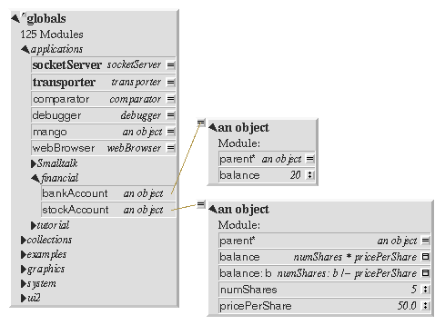

<table cellpadding=0 cellspacing=0><tr><td valign=top>

<H2> ../Installing </H2>
<H3>
After adding and connecting the new slots: <BR>
 <BR>

</H3>

</td><td valign=top>

<h3> Connecting the slots to the objects </h3>

Having added the slots, we can use the arrow-dragging technique to connect them 
to the appropriate objects.
<P>


</td></tr></table>

<P>
<center>
[ <a href="AddingSlotsToGlobals.html"> Previous  </a> ]
[ <a href="../../index.html"> Index  </a> ]
[ <a href="SettingCreatorPath.html"> Next  </a> ]
</center>